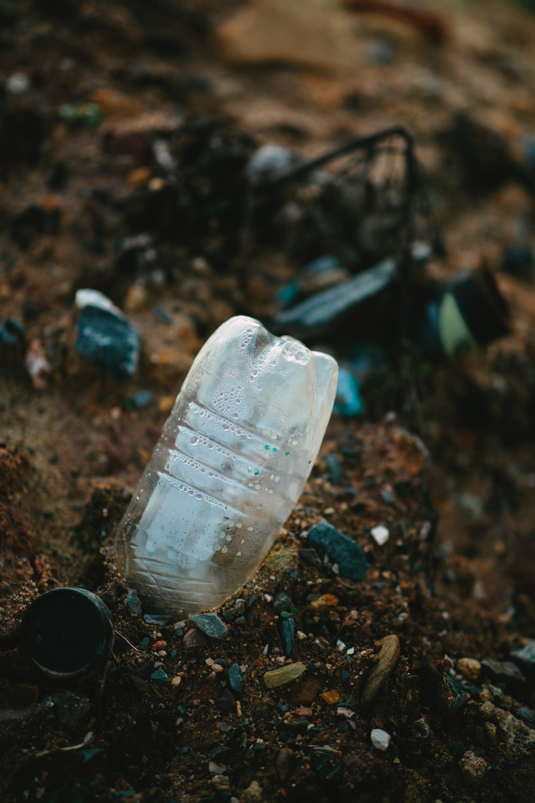
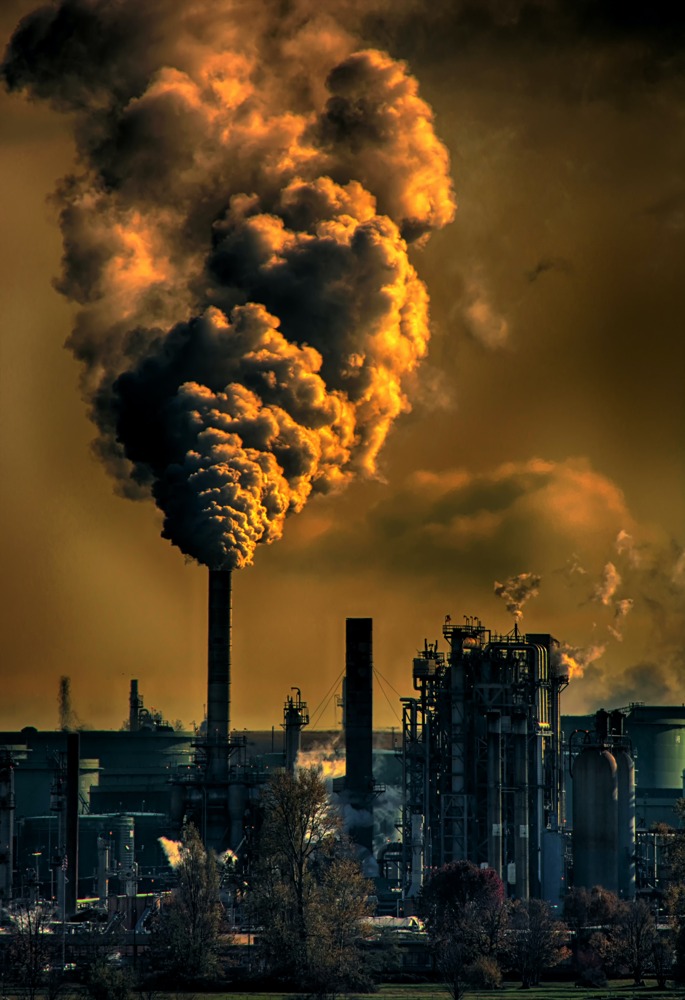
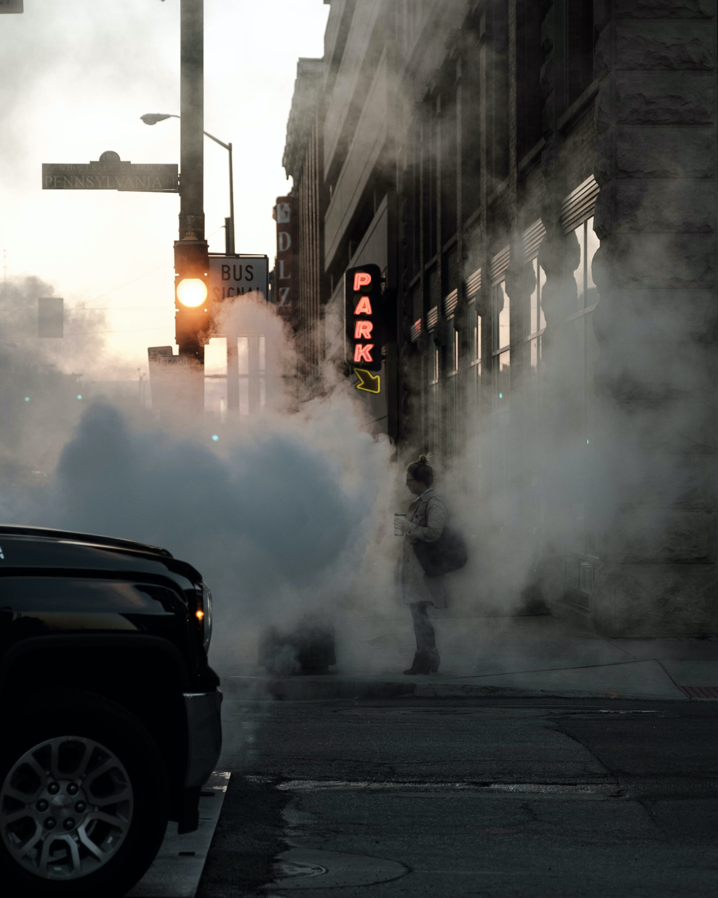
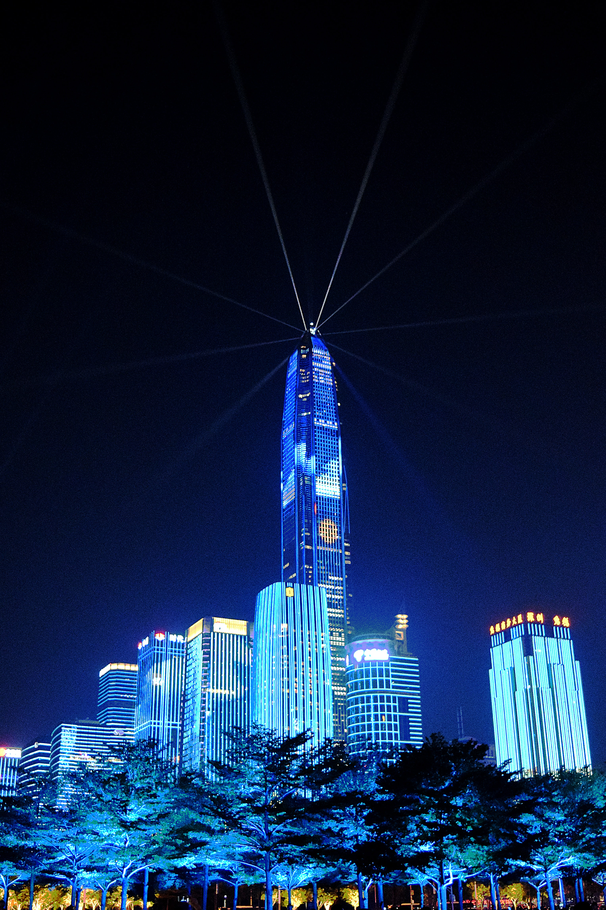
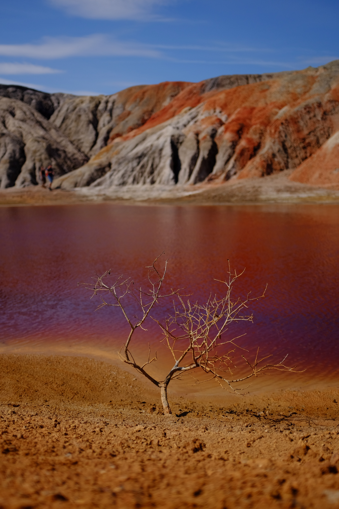
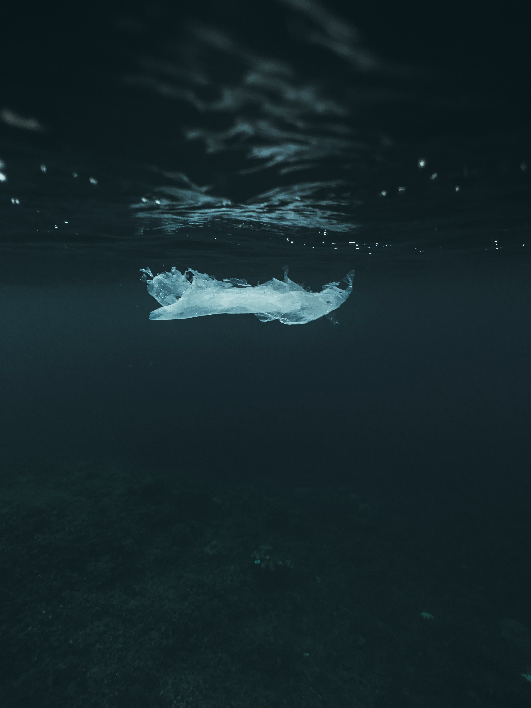

- 
-

- 
- 
- 
- 
- 

Implementar el uso de energias renovables para reducir las emiciones de gases de efecto invernadero. Se puede optar por el autoconsumo electrico que consiste en una instalación fotovoltaica en tu tejado la cual te garantizará energía limpia, directamente de tu tejado, no generarás ningún impacto en el medio y reducirá tu factura de la luz.
Ser eficientes con el consumo de energia. No solo implica consumir lo necesario sino que tambien hacerlo
de forma eficiente y responsable.
Aplica las 3 R.
Reduce: consume menos, es decir, lo indispensable
Reutiliza: buscale una segunda vida util a los productos.
Recicla: es imprescindible reciclar si queremos generar un cambio positivo.
Opta por empezar a usar menos el coche privado siempre que puedas.
Utiliza medios de transporte sostenibles como la bicicleta o intenta
desplazarte en transporte publico.
Intenta transformar tu dieta en una que sea con un baja en carbono, es decir
reduce el consumo de carnes y aumenta el de frutas, verduas y hortalizas.
Es importante tambien que los productos sean locales y que sean de temporada.
Si puedes ¡planta un arbol! ya que cada uno de ellos puede absorber
un kilo de CO2 durante su vida.